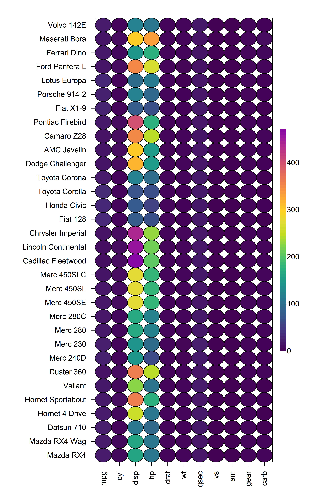
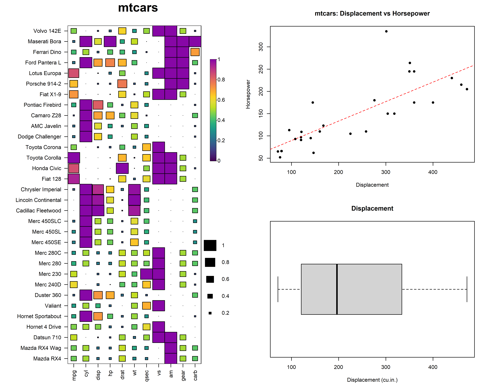

Overview
The key functions in HeatmapR are summarised below:
-
heat_map()creates the heatmaps -
heat_map_clust()is used insideheat_map()to perform hierarchical clustering on the dataset usingstats::hclust() -
heat_map_scale()is used insideheat_map()to apply column-wise mean, z-score or range scaling to the dataset prior to constructing the heatmap. -
heat_map_layout()allows you to create custom plot layouts to arrange multiple heatmaps. -
heat_map_save()can be called prior to anyheat_map()call to save a high resolution image. -
heat_map_record()can be called after anyheat_map()calls to record the current plot for saving to an R object. -
heat_map_complete()can be called when creating complex layouts to indicate when the resulting layout should be saved to file usingheat_map_save(). -
heat_map_reset()resets all HeatmapR associated settings in case things are not working as they should.
1. Construct a Basic Heatmap
Constructing a heatmap is as simple loading the HeatmapR package and supplying your dataset to the heat_map() function. This will create a heatmap using the raw data and a default red-green colour scale.

2. Column-Wise Scaling
The heatmap above is not very informative due to each of the column being on vastly different scales. heat_map() can perform column-wise range, mean or z-score scaling using heat_map_scale() to help improve the visualisation of the data. The type of scaling to perform can be controlled through the scale argument.
2.1 Range Scaling
The range scaling method takes each value in a column, subtracts the minimum value in that column and divides the result by the range of that column. This results in the data being rescaled to have values between 0 and 1.
heat_map(mtcars, scale = "range")

2.2 Mean Scaling
The mean scaling method takes each value in a column, subtracts the mean value in that column and divides the result by the range of that column.
heat_map(mtcars, scale = "mean")

2.3 Z-Score Scaling
The z-score scaling method takes each value in a column, subtracts the mean value in that column and divides the result by the standard deviation of that column.
heat_map(mtcars, scale = "zscore")

3. Hierarchical Clustering
heat_map() can also perform hierarchical clustering using the heat_map_clust() function. heat_map() supports performing hierarchical clustering on both rows and columns through the cluster argument. In heat_map() hierachical clustering is always performed post data scaling and the data is automatically reordered based on the clustering result.

3.3 Rows and Columns
heat_map(mtcars, scale = "range", cluster = "both")
4. Dendrograms
In addition to reordering data post hierarchical clustering, heat_map() also has support for displaying dendrograms through its dendrogram argument. The dendrogram_scale argument can be used to scale the branch heights to be the same so that it is easier to see the relationships between the rows or columns.


4.3 Rows and Columns
heat_map(mtcars, scale = "range", dendrogram = "both")
4.4 Scaled Branch Heights
heat_map(mtcars, scale = "range", dendrogram = "both", dendrogram_scale = TRUE)

7. Display Values
To display the values in the heatmap, simply set box_text = TRUE and customize the text using the box_text_font, box_text_size and box_text_col arguments.
heat_map(mtcars, scale = "range", dendrogram = "both", dendrogram_scale = TRUE, box_text = TRUE)

7. Categorical Variables
heat_map() also has full support for datasets that contain non-numeric columns. These columns will be moved to the right of the heatmap and excluded from any scaling, heirarchical clustering or dendrograms. At release, heat_map() does not have support for adding legends for these columns, but it is possible to just add text for these non-numeric varaibles by setting box_text = "character". The colours for non-numeric variables can be altered through the box_col_palette argument.
8. Customization
There are countless ways to customize the appearance of your heatmap using heat_map(). Below is an example where a number of features have been customized:
heat_map(mtcars, scale = "range", dendrogram = "both", dendrogram_scale = TRUE, box_text = TRUE, box_text_font = 3, box_text_col = "black", box_text_col_alpha = 0.5, box_border_line_col = "white", box_col_scale = c("white", "yellow", "orange", "red"), title = "mtcars", title_text_font = 2, title_text_size = 1.5, title_text_col = "red", legend_side = 1, axis_text_x_side = 3, axis_text_y_side = 2, axis_label_x = "Parameter", axis_label_y = "Model")

9. Save High Resolution Images
Saving high resolution heatmaps is as easy as calling heat_map_save() prior to calling heat_map(). Simply supply a name for the file with a png, jpeg, pdf, tiff or svg file extension and specify the dimensions of the image in inches. For example, the previous plot was exported to a png file using the following code:
# HEAT_MAP_SAVE heat_map_save("heat_map.png", width = 10, height = 10, res = 500) # HEAT_MAP heat_map(mtcars, scale = "range", dendrogram = "both", dendrogram_scale = TRUE, box_text = TRUE, box_text_font = 3, box_text_col = "black", box_text_col_alpha = 0.5, box_border_line_col = "white", box_col_scale = c("white", "yellow", "orange", "red"), title = "mtcars", title_text_font = 2, title_text_size = 1.5, title_text_col = "red", legend_side = 1, axis_text_x_side = 3, axis_text_y_side = 2, axis_label_x = "Parameter", axis_label_y = "Model")
10. Layouts
HeatmapR has full support for custom plot layouts using heat_map_layout(). It is also now possible to arrange your heatmaps with any other plot constructed using base graphics using layout() or par("mfrow") or par("mfcol"). heat_map_layout() is simply a conveient wrapper fro these tradional base graphics layout functions. You will need to call heat_map_save() prior to heat_map_layout() to save high resolution images of custom layouts. You also need to let heat_map() know when the layout is ready from saving by running heat_map_complete().
# Save to file heat_map_save("heat_map_layout.png", height = 14, width = 7, res = 500) # Create layout heat_map_layout(c(2,1)) # mtcars heat_map(mtcars, scale = "range", dendrogram = "both", box_col_scale = c("white", "yellow", "orange", "red")) # iris heat_map(iris[sample(150, 30),], scale = "mean", dendrogram = "both", box_text = "character", box_text_col = "black") # LAYOUT COMPLETE heat_map_complete()
